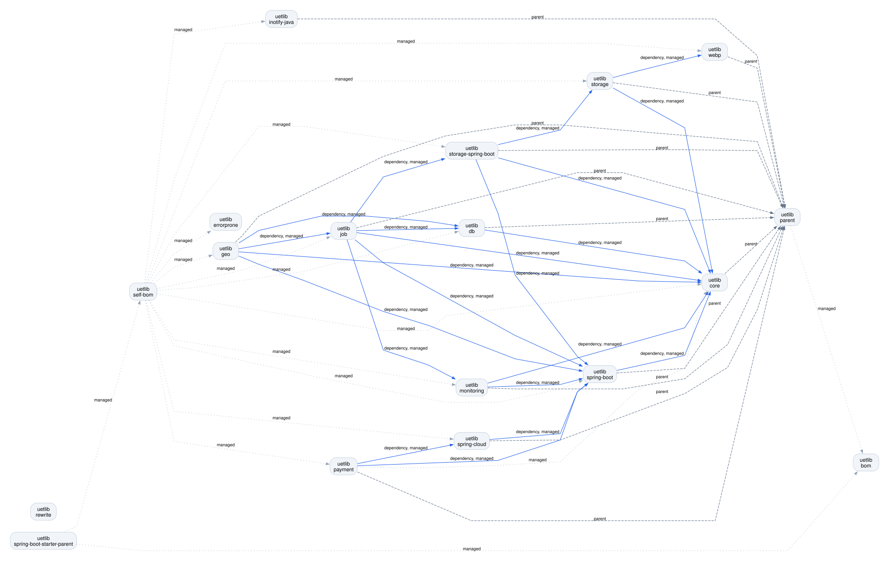
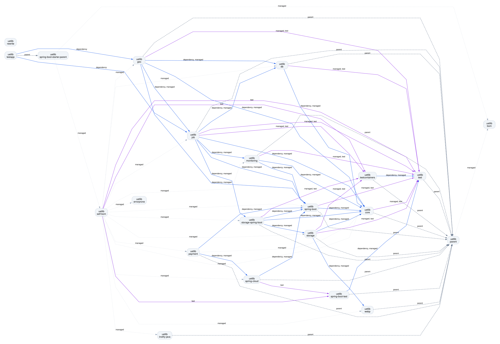
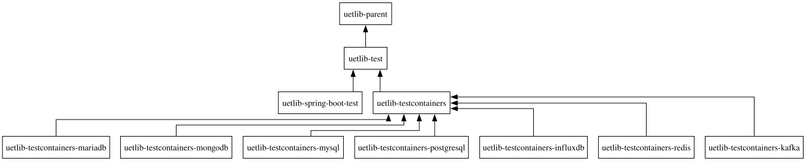

Batteries for your Java backend
uetlib is a collection of modular Java and Spring Boot libraries, battle-tested in production at Ubique. Storage, jobs, payments, geo, monitoring and testing, all versioned together and ready to drop in.
Get started View on GitHubLibraries
Pick only what you need. Every library is an independent Maven artifact.
uetlib-core
Common utilities and helpers used across all uetlib modules.
uetlib-coreuetlib-db
Database utilities and helpers.
uetlib-dbuetlib-storage
Unified object storage clients for Amazon S3, Azure Blob, Cloudflare R2, MinIO and the file system, with declarative storage mappings and image variants.
uetlib-storageuetlib-storage-spring-boot
Spring Boot integration for uetlib-storage, including an opt-in storage HTTP proxy endpoint.
uetlib-storage-spring-bootuetlib-job
A job framework for scheduling and running background work.
uetlib-jobuetlib-payment
Provider-neutral payment abstractions with adapters for Datatrans and PostFinance.
uetlib-payment-datatrans-postfinanceuetlib-geo
Geospatial data handling, coordinate utilities and conversions, with database and job integrations.
uetlib-geo-db-jobuetlib-webp
Production-oriented, in-process WebP encoder for Java. Convert PNG or JPEG to WebP in one line.
uetlib-webpuetlib-inotify-java
Linux inotify filesystem notifications through Java JNI bindings, with a bundled native library. Licensed under LGPL-3.0-or-later.
uetlib-inotify-javauetlib-monitoring
Info and check endpoints plus BetterUptime heartbeats for service monitoring.
uetlib-monitoringuetlib-spring-boot
Spring Boot helpers and auto-configuration, including geo and security support.
uetlib-spring-boot-geo-securityuetlib-spring-cloud
Spring Cloud helpers, including security integration.
uetlib-spring-cloud-securityTesting
Utilities to make integration tests fast and reliable.
uetlib-test
General test utilities and helpers.
uetlib-testuetlib-spring-boot-test
Test support for Spring Boot applications.
uetlib-spring-boot-testuetlib-testcontainers
Preconfigured Testcontainers for common infrastructure.
influxdbkafkamariadbmongodbmysqlpostgresqlredis
uetlib-testapp
Reference application exercising the full uetlib and test framework.
uetlib-testappBuild & dependency management
Consistent versions across all your projects.
uetlib-errorprone
Compile-time Error Prone checks for uetlib conventions, including open enum structure and imports.
uetlib-errorproneuetlib-rewrite
OpenRewrite recipes for migrating Maven coordinates, Java packages and class references in configuration resources.
uetlib-rewriteuetlib-self-bom
Bill of materials pinning the versions of all uetlib-* modules.
uetlib-self-bomuetlib-bom
Bill of materials for the third-party dependencies used by uetlib.
uetlib-bomuetlib-parent
Maven parent POM with dependency management, plugin management and sensible defaults.
uetlib-parentuetlib-spring-boot-starter-parent
Parent POM based on Spring Boot Starter Parent, preconfigured with the uetlib BOMs and Spring Cloud.
uetlib-spring-boot-starter-parentRepository dependencies
All uetlib repositories and their Maven references, with modules grouped by repository. Arrows point from a repository to the repository it references. Labels distinguish dependencies, test dependencies, Maven parents, managed versions and build tools. Parent and management links are not runtime dependencies.



Getting started
Two ways to bring uetlib into your Maven project.
Spring Boot projects: use the parent
Inherits Spring Boot, Spring Cloud and all uetlib versions in one go.
<parent>
<groupId>ch.uetlib</groupId>
<artifactId>uetlib-spring-boot-starter-parent</artifactId>
<version>${uetlib.version}</version>
</parent>Any project: import the BOM
Keep your own parent and just manage uetlib versions.
<dependencyManagement>
<dependencies>
<dependency>
<groupId>ch.uetlib</groupId>
<artifactId>uetlib-self-bom</artifactId>
<version>${uetlib.version}</version>
<type>pom</type>
<scope>import</scope>
</dependency>
</dependencies>
</dependencyManagement>Then add the modules you need, without a version:
<dependency>
<groupId>ch.uetlib</groupId>
<artifactId>uetlib-storage</artifactId>
</dependency>Contributing
Found a bug or have an idea? Issues for all uetlib repositories are tracked centrally in UbiqueInnovation/uetlib. Pull requests are welcome in the individual component repositories.
License
uetlib is open source and licensed under the Apache License, Version 2.0. The inotify bindings in uetlib-inotify-java use LGPL-3.0-or-later. See each repository for its license and third-party notices.